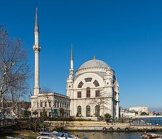

แนะนำ
La Mosquée de Dolmabahçe est une mosquée située dans le district stambouliote de Beşiktaş, en Turquie.
The Dolmabahçe Mosque is a baroque waterside mosque in Kabataş in the Beyoğlu district of Istanbul, Turkey, close to the Dolmabahçe Palace. It was commissioned by Queen Mother Bezmialem Valide Sultan and designed by the Turkish Armenian architect, Garabet Balyan in 1855. After his mother's death, Sultan Abdülmecid saw the building work through to completion.
Dolmabahçe Camii, Sultan Abdülmecid'in annesi Bezmialem Valide Sultan tarafından başlatılıp ölümü üzerine Sultan Abdülmecid tarafından tamamlanan ve tasarımı Garabet Balyan'a ait olan bir yapıdır.
Masjid Dolmabahçe adalah sebuah masjid peninggalan Kesultanan Utsmaniyah yang berada di kawasan Kabataş, distrik Beyoğlu, Provinsi Istanbul, Turki atau dekat dengan Istana Dolmabahçe. Masjid ini awalnya dibangun atas perintah Bezmiâlem Sultan–ibu Sultan Abdülmecid–dan dirancang oleh arsitek Armenia–Turki, Garabet Balyan pada tahun 1855. Namun setelah kematian ibunya, pemantauan pembangunan masjid ini digantikan oleh Sultan Abdülmecid.
دولماباغچہ مسجد ترکی کا ایک مسجد جو صوبہ استنبول میں واقع ہے۔
La Mezquita de Dolmabahçe es una mezquita situada en Estambul, Turquía. Fue encargada por la reina madre Bezmiâlem Sultan.
La moschea di Dolmabahçe è una moschea imperiale ottomana situata nel quartiere di Dolmabahçe a Istanbul, in Turchia.
ドルマバフチェ・モスク は、トルコのイスタンブルにあるモスク。オスマン帝国の31代スルタンであるアブデュルメジト1世の母のベズミ・アーレム・ヴァーリデ・スルタンが出資し、1853年から1855年にかけて建設された。トルコ語での名称にならってドルマバフチェ・ジャーミイとも呼ばれる。また、正式名称はベズミ・アーレム・ヴァーリデ・スルタン・ジャーミイ である。
Мече́ть Долмабахче́ — мечеть XIX века, расположенная к югу от одноимённого дворцового комплекса в Стамбуле.
Moscheea Dolmabahçe este o moschee din orașul Istanbul, Turcia. Ea este situată lângă Bosfor, în apropiere de renumitul Palat Dolmabahçe.
บนแผนที่
เอกสารและลิงก์
- Wikipédia — Français
- Wikipédia — العربية
- Wikipédia — English
- Wikipédia — Türkçe
- Wikipédia — Bahasa Indonesia
- Wikipédia — اردو
- Wikipédia — Español
- Wikipédia — Italiano
- Wikipédia — 中文
- Wikipédia — 日本語
- Wikipédia — Русский
- Wikipédia — Română
- Wikidata — Q2086068
ข้อมูล: วิกิสนเทศ (CC0) ปรับปรุงทุก 3 เดือน ปีที่แสดงคือปีที่สร้างอาคารเก่าที่สุดที่ทราบ: สำหรับอาคารที่กลายเป็นมัสยิดภายหลัง (เช่น ฮาเจียโซเฟีย) จะเป็นปีของอาคารเดิม ภาพถ่าย: วิกิมีเดียคอมมอนส์ ผู้ถ่ายและสัญญาอนุญาตอยู่ในหน้าของแต่ละภาพ